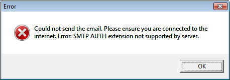

Lors de l'envoie une alerte E-mail d'essai, un message d'erreur apparaît
Les clients E-mail qui stockent les messages dans un seul fichier
Conflits avec plusieurs versions d'ActivePython
Outlook 2000 ne se restaure pas une fois minimisé
Could not send the email. Please ensure you are connected to the internet. Error: SMTP instance has no attribute 'sock'
ou
Could not send the email. Please ensure you are connected to the internet. Error: SMTP AUTH extension not supported by server

Solution: La configuration du serveur SMTP est incorrecte. Notez que plusieurs FAI ne requièrent pas de login et mot de passe pour le serveur SMTP. Essayer de les laisser vide.
Certains clients d'e-mail clients (ex: The Bat!) stockent tous les messages dans un seul fichier. D'autres stockent chaque e-mail dans un fichier séparé. Si ClamWin trouve un virus attaché à un e-mail, il considèrera le fichier entier (c'est à dire, tous les e-mails du dit dossier) comme étant infecté. Par conséquent, le fichier entier sera enlevé ou mis en quarantaine. Vous pouvez souhaiter régler les filtres (voyez les instructions pour configurer ClamWin) de sorte que ces dossiers ne soient pas scannés.
Les utilisateurs de The Bat! Seront peut être intéressés de savoir que Marco Pontello a écrit un plug-in qui permet à The Bat! D'utiliser ClamWin pour scanner des pièces jointes. Plus de détails sont disponibles sur le site Web de Marco.
Avoir Python d'installé ne devrait pas poser de problèmes si vous avez Python 2.3 et Pywin32-201 (http://sourceforge.net/projects/pywin32/) installés sur votre système.
Il semble que les versions du python d'ActiveState python qui viennent avec win32all-163 (maintenant pywin32) créent un conflit de DLL. Ainsi si vous avez ActivePython 2.3, installez simplement pywin32 et cela devrait être bon.
Lorsque ClamWin est installé, Outlook 2000 peut ne pas se restaurer proprement après avoir été minimisé. L'installation d'Office 2000 Service Release 1a (SR-1a) règlera ce problème, de plus il est recommandé, car il inclut des corrections de bogues et des corrections de failles. Tout les détails et les téléchargements sont disponibles à: http://www.microsoft.com/downloads/details.aspx?displaylang=fr&FamilyID=af6c8d03-7633-45b4-ab96-795ee656f2a2 ou http://tinyurl.com/xsyx